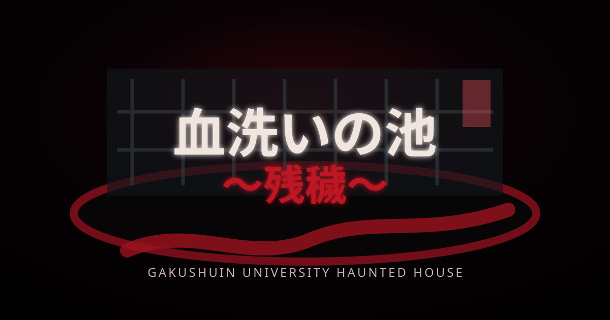
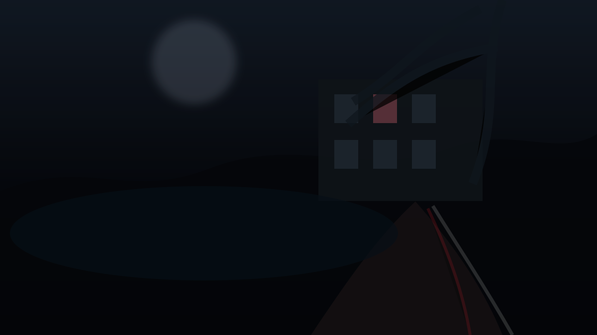
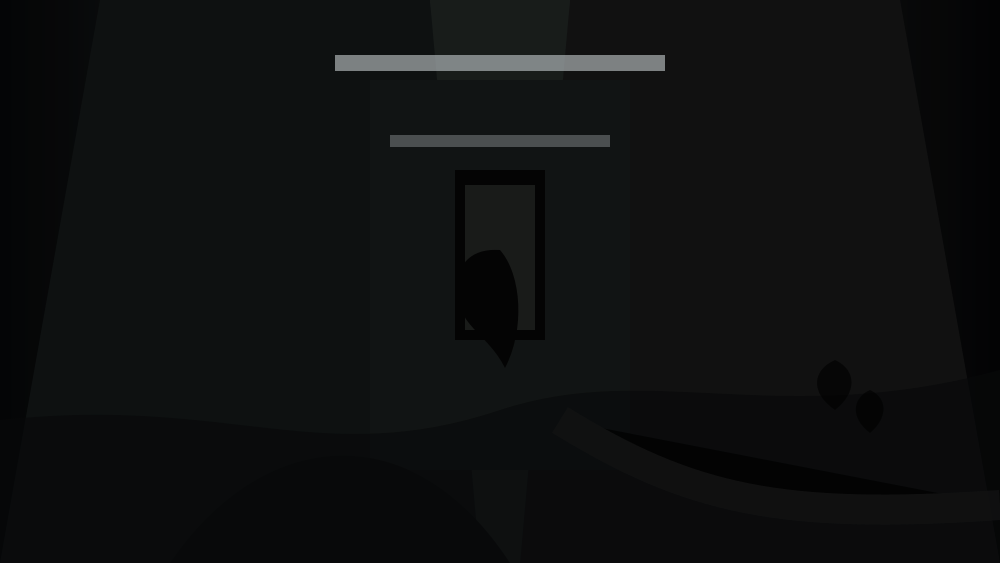
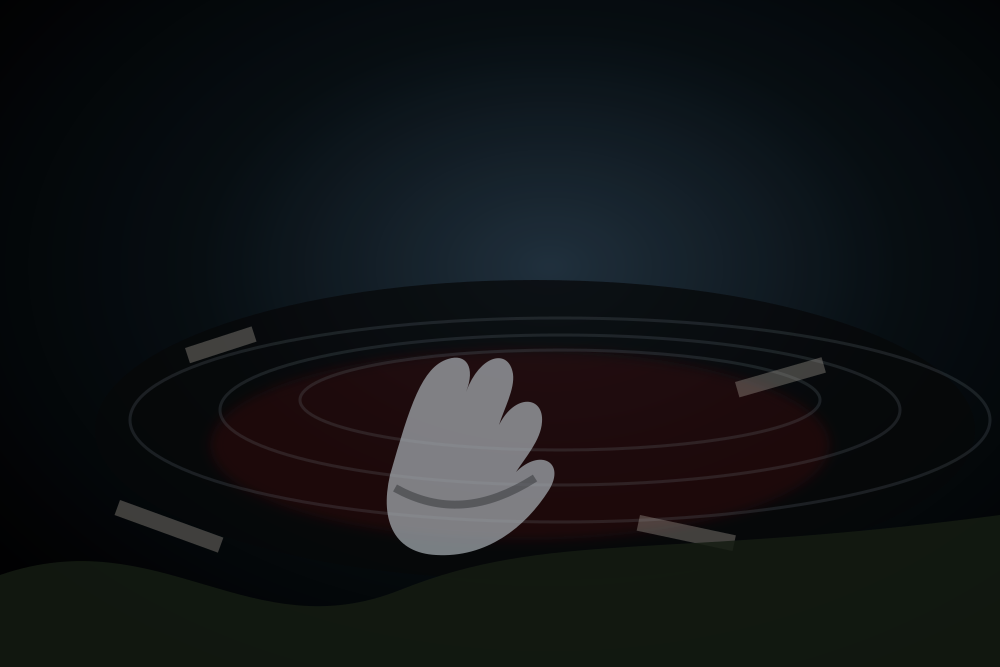
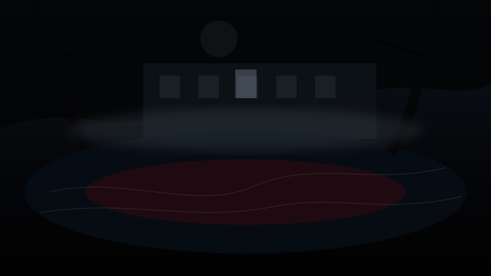

高等科の文化祭で語られた「血洗いの池」の事件は、終幕を迎えたように見えた。
けれど、数か月後。学習院大学の構内で、同じ夢を見る学生が現れ始める。濡れた床を歩く足音。誰もいない教室の窓。池を覗いた瞬間に聞こえる、浅い呼吸。
「まだ、洗い終わっていない。」
ある教室の机から見つかった紙には、その一文と、前作の整理券番号だけが残されていた。来場者は、残された穢れの痕跡をたどりながら、池の底に沈んだ“本当の続き”へ進む。
GAKUSHUIN UNIVERSITY HORROR EXPERIENCE
これは、終わったはずの噂の続きです。
前作を知っている人ほど、違和感に気づきます。
STORY
高等科の文化祭で語られた「血洗いの池」の事件は、終幕を迎えたように見えた。
けれど、数か月後。学習院大学の構内で、同じ夢を見る学生が現れ始める。濡れた床を歩く足音。誰もいない教室の窓。池を覗いた瞬間に聞こえる、浅い呼吸。
「まだ、洗い終わっていない。」
ある教室の机から見つかった紙には、その一文と、前作の整理券番号だけが残されていた。来場者は、残された穢れの痕跡をたどりながら、池の底に沈んだ“本当の続き”へ進む。
VISUAL FILES





INFORMATION
CAUTION
ANONYMOUS VOICES